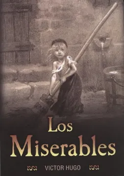
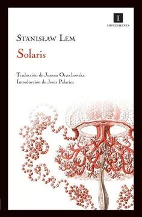
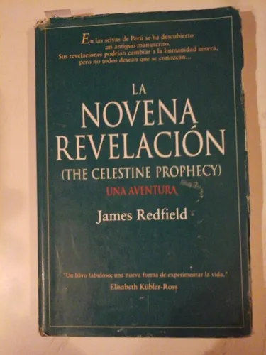

Reseñas de libros
"Entre Sombras y Silencio"
Libro: *La Sombra del Viento* de Carlos Ruiz Zafón
Una historia atrapante ambientada en la Barcelona de la posguerra, donde el joven Daniel descubre un libro que cambiará su vida. Una mezcla perfecta de intriga, pasión por los libros y secretos familiares. Zafón construye una atmósfera única que te atrapa desde la primera página.
"Realismo Brutal y Esperanza"
Libro: *Los Miserables* de Victor Hugo
Más que una novela, una obra monumental sobre la redención humana. Hugo retrata con crudeza la injusticia social y al mismo tiempo llena la historia de compasión. Jean Valjean es un personaje inolvidable que te confronta con tus propios valores y prejuicios.
"Filosofía Existencial Hecha Ciencia Ficción"
Libro: *Solaris* de Stanisław Lem
Esta obra desafía la percepción de la inteligencia humana y alienígena, explorando los límites del conocimiento y la culpa. No es una novela espacial típica, sino una introspección psicológica y filosófica disfrazada de ciencia ficción. Ideal para lectores que buscan profundidad.
"Una Promesa No Cumplida"
Libro: *La novena revelación* de James Redfield
Aunque prometía una experiencia transformadora con tintes espirituales y filosóficos, esta obra resulta superficial y repetitiva. Su narrativa cae en clichés y deja muchos conceptos sin desarrollar. Ideal quizás para quienes recién se acercan al tema, pero insatisfactoria para lectores más exigentes.